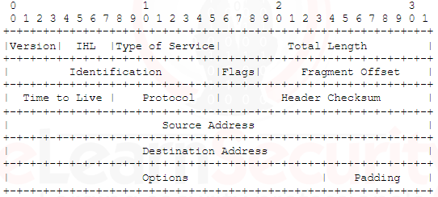

Generally speaking, packets have a header and a payload
Header contains protocol specific structure.
Payload contains the body of data to be consumed.
The IP protocol header is at least 160 bites (20 bytes) long and includes information to interpret the content of the IP packet:

First four bits identify IP version (v4 or v6)
32 bits (4 bytes) at position 96 represent source address
Following 4 bytes represent destination address